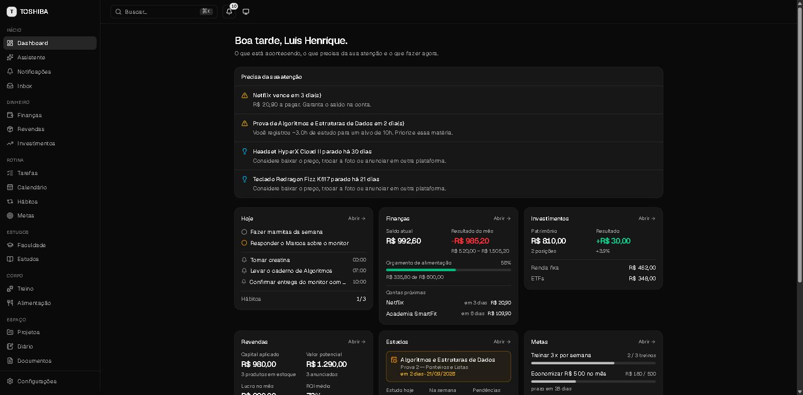
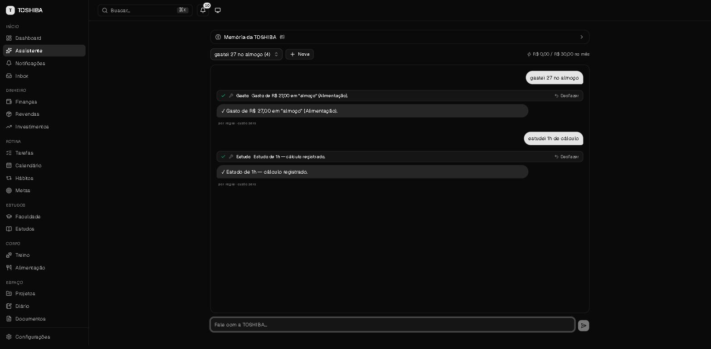

TOSHIBA — Personal Life Operating System
Sistema local-first de uso diário que centraliza finanças, revendas, faculdade, estudos, tarefas, hábitos, treino, alimentação e documentos em 19 módulos sobre um único banco — e é operado por conversa.
- Next.js 16
- React 19
- TypeScript strict
- Prisma 7
- SQLite
- Tailwind v4
- shadcn/ui
- Zod 4
- Vitest
- PWA


Ver estudo de caso
Problema
Minha vida estava espalhada por aplicativos que não se conversavam: finanças numa planilha, tarefas num caderno, notas da faculdade no portal, treino e alimentação em apps separados. Registrar qualquer coisa exigia abrir o app certo e preencher formulário — o custo de registrar era maior que o benefício, então eu simplesmente não registrava, e nenhum dado se cruzava com outro.
Solução
Um sistema único operado por conversa: “gastei 27 no almoço” vira uma transação; “estudei 1h de cálculo” vira uma sessão registrada. Frases diretas são interpretadas por um roteador de intenção baseado em regras e viram dados sem nenhuma chamada paga de IA; só perguntas abertas acionam o modelo. Tudo roda na máquina, com o banco em arquivo.
Arquitetura
Entrada de texto
│
├─→ Roteador de intenção (regras) ──→ função de domínio ──→ banco [custo zero]
│
└─→ Camada AIProvider ──→ Ollama (local) | Claude | OpenAI | Gemini
│ │
│ └─→ orçamento mensal com corte automático
│ (ao estourar, volta para o modo regras)
↓
Tool Registry ──→ as MESMAS funções de domínio que a interface usa
↓
Server Actions (Next.js) ──→ Prisma 7 ──→ SQLite (WAL, local)
Desafios técnicos
- Não duplicar regra de negócio. A IA não tem um caminho paralelo: ela executa as mesmas funções de domínio que a interface chama, através de um registro de ferramentas próprio — escrito à mão em vez de adotar um framework de agentes, para manter o comportamento auditável.
- Propagação transacional. Registrar a compra de um produto para revenda precisa criar a transação financeira, o item de estoque e atualizar o painel — tudo ou nada, numa transação só.
- Custo previsível. Teto de gasto mensal configurável; ao atingir o limite, o sistema degrada para o modo regras em vez de parar de funcionar.
Minha responsabilidade
Projeto inteiro, sozinho: decisões de arquitetura e a justificativa de cada uma, modelagem do banco, camada de IA, regras de domínio, interface, testes e a documentação técnica (arquitetura, esquema de dados e roadmap).
Resultado
MVP concluído e em uso diário: 54 modelos no schema, 58 arquivos de teste (unitários e de integração com banco descartável) e 87 commits. Funciona offline e, com modelo local, sem custo de IA.